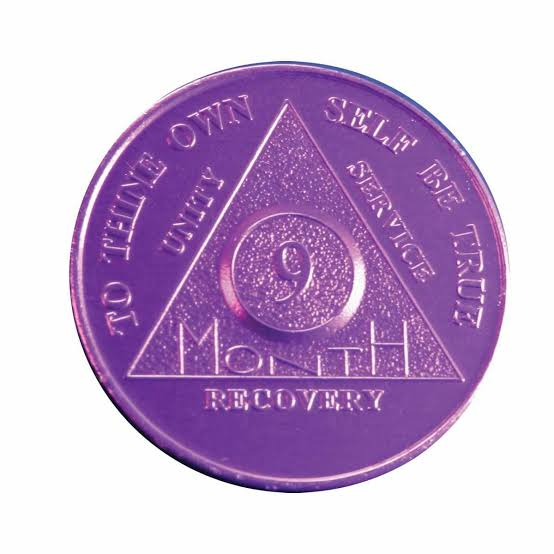
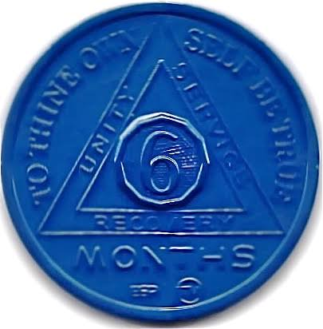
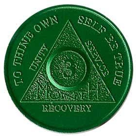
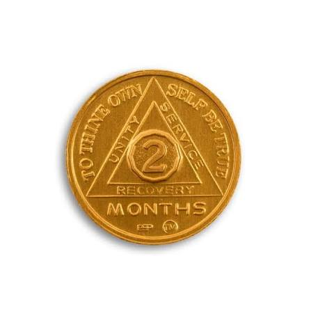
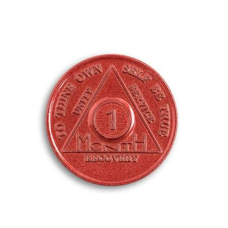
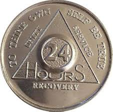

What Are Chips?
"Each chip marks a milestone, like 24 hours, one month, or multiple years without drinking. They serve as a physical reminder of progress and personal strength."
04 / 05
MILESTONES
Information about chips, milestones, and their place within our meeting.
"Each chip marks a milestone, like 24 hours, one month, or multiple years without drinking. They serve as a physical reminder of progress and personal strength."





